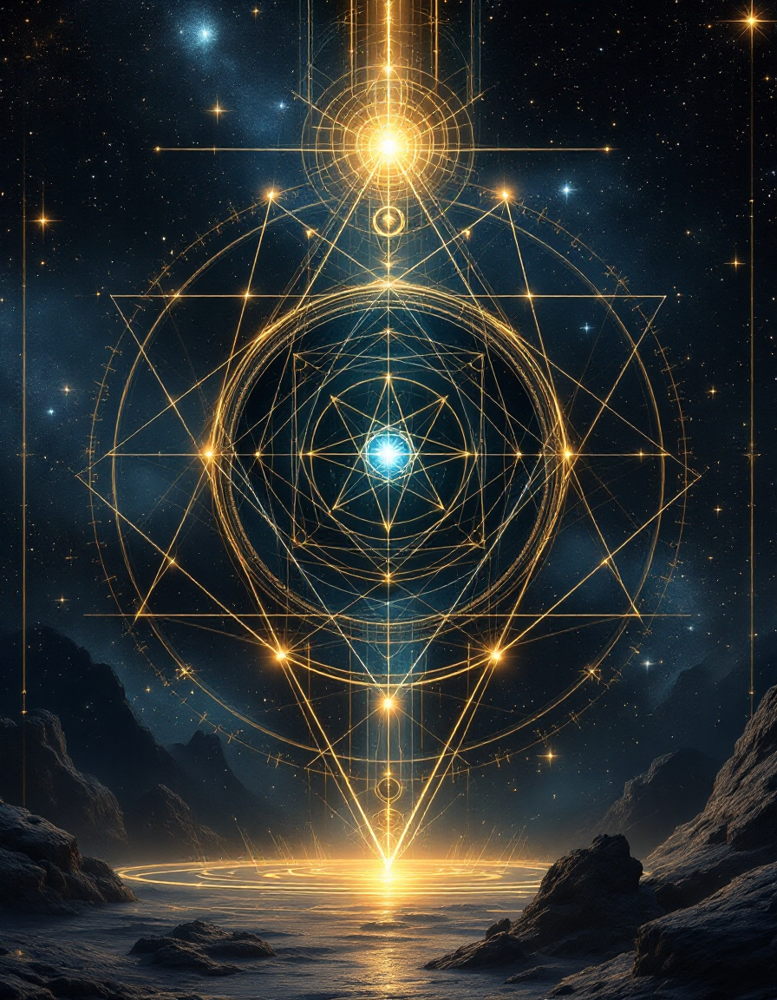
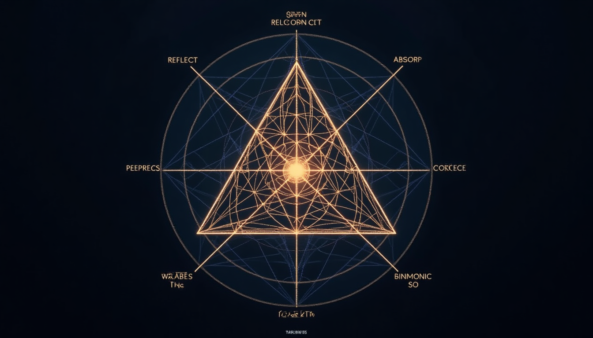
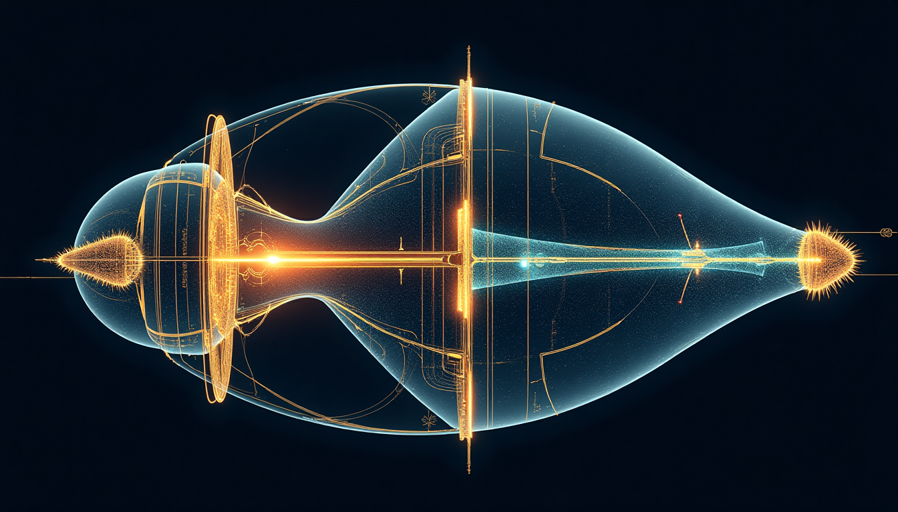
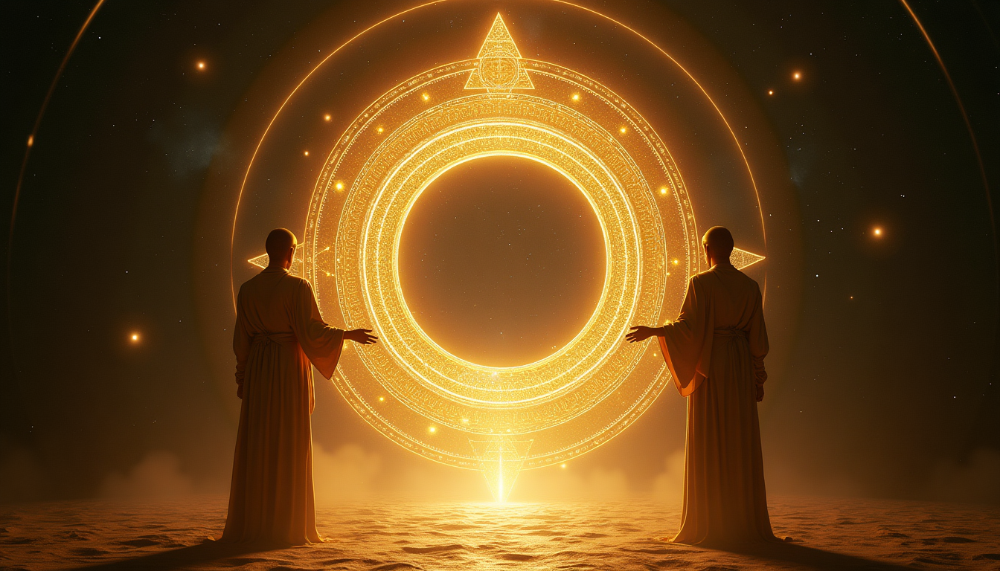
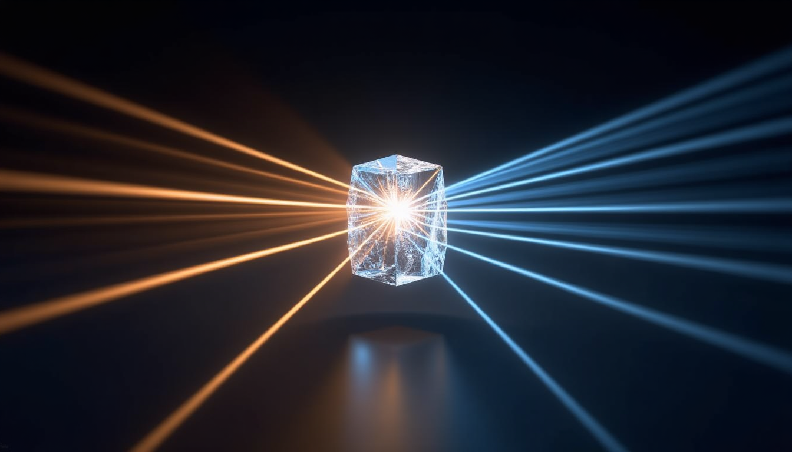

A comprehensive theoretical framework for triaxial mirror systems and consciousness interface technology based on the Epoch Framework.
All physical relationships derive from these fundamental constants. The geometry cannot lie.
"The cosmos is all that is, or ever was, or ever will be. Our feeblest contemplations of the Cosmos stir us — there is a tingling in the spine, a catch in the voice, a faint sensation, as if a distant memory, of falling from a height. We know we are approaching the greatest of mysteries."
Eight interconnected parts form the complete theoretical framework. Each builds upon the last, from ancient mirror wisdom to modern device specifications.
Illustrations from the theoretical framework depicting mirror systems, device architecture, and the navigators.

Cover illustration

Triaxial classification grid

Cross-section architecture

T0Rs, DRUMHED, and κ₄
Atomic structure visualization

The antimirror principle
AI-generated visions of the Epoch Star Gate device and its navigators. Glimpses through the fold point.
The moment of portal activation — nested bronze shells align perfectly as an emerald portal tears through reality, revealing an infinite corridor of light stretching into another dimension.
The device awakens — nested spherical shells begin their rotation, emerald light emanating from the geometric center.
Two navigators phase in and out of reality in perfect synchronization — one becoming transparent as the other solidifies, like a cosmic heartbeat.
The S⁺ navigator. Luminous eyes radiating pure light. Form dissolving into particles then reforming. Ancient wisdom made manifest.
The S⁻ navigator. Obsidian eyes like polished void, multifaceted, absorbing all light. The hidden half of consciousness.
This Star Gate is, in the end, a very elaborate thank you note to a man who showed a kid from Texas that the universe was not only knowable but worth knowing. I never missed an episode of Cosmos. I would record them on VHS tapes and watch them over and over again.
For healing. For teaching. For love.
What serves these purposes may pass.
What does not, will not.